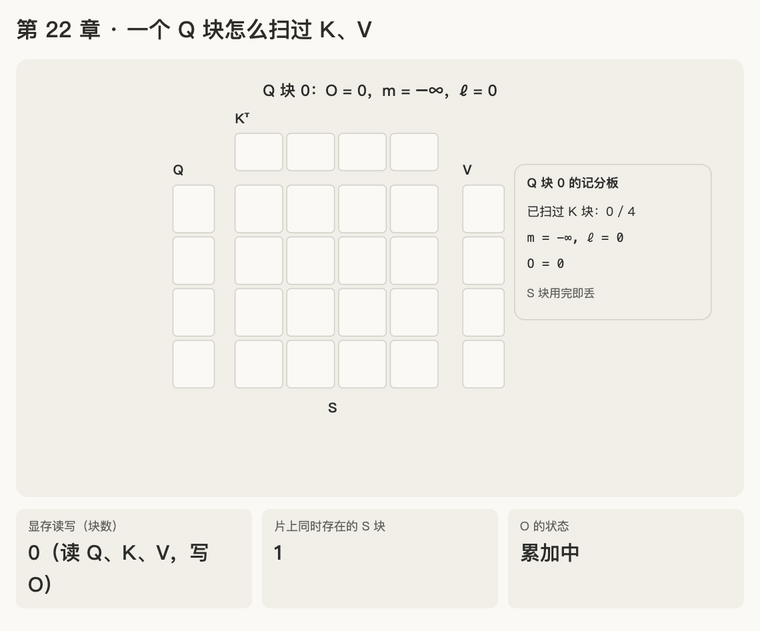

第 22 章 · FlashAttention：从 FA1 到 FA4，每一代在解决什么瓶颈
本章回答：标准 attention 为什么慢在显存而不是算力？FlashAttention 怎么用分块 + online softmax 做到"不写出 N × N 矩阵"、结果完全精确？FA2、FA3、FA4 分别针对 A100、H100、B200 做了什么改动？
讲解日期：2026-11-14 · 上一章：第 21 章 online softmax 与融合 · 下一章：第 23 章 推理 kernel
对应原文：FlashAttention-2 论文（materials/text/flashattention-2.txt：§2.3 第 138–225 行、§3.1 第 234–388 行、§3.2 第 389–469 行）；FlashAttention-3 论文（text/flashattention-3.txt：摘要、§3.1 第 208–298 行、§3.2 第 299–369 行、§3.3 FP8 第 370–447 行）；FlashAttention-4 论文（text/flashattention-4.txt：摘要、§3.1 第 203–414 行）；GPU MODE L36、L80 字幕；Oxford「FlashAttention」讲义（text/oxford-FlashAttention.txt）本章缩写：FA = FlashAttention · HBM = High Bandwidth Memory（显存）· SRAM = Static RAM（这里指 shared memory / 寄存器等片上存储）· Q / K / V = Query / Key / Value（查询 / 键 / 值）· \(B_r\) / \(B_c\) = row / column block size（Q 块的行数 / K、V 块的行数）· d = head dimension（每个注意力头的维度）· MUFU = Multi-Function Unit（多功能单元，GPU 上算 exp 等超越函数的硬件，即 SFU）
讲解
第一步：标准 attention 慢在哪（2026-11-14）
一个头的 attention（序列长 N、头维度 d）：
标准实现三个 kernel：GEMM 写出 \(S\) → softmax 读 \(S\) 写 \(P\) → GEMM 读 \(P\)。
数字演示：N = 8192、d = 128、BF16，一个头：
| 项 | 大小 |
|---|---|
| Q、K、V、O 各 | 8192 × 128 × 2 B = 2 MB |
| S、P 各 | 8192 × 8192 × 2 B = 128 MB |
中间矩阵比输入输出大 64 倍，而 softmax 那一步是 memory-bound（第 21 章）。显存读写主要花在 S、P 上，而且显存占用随 \(N^2\) 增长——长序列直接放不下。
第二步：FlashAttention 的思路——分块 + online softmax（2026-11-14）
FA2 论文 §2.3.1 原话：用分块（tiling）减少显存读写——(1) 把输入分块从 HBM 搬进 SRAM，(2) 在块上算 attention，(3) 更新输出，不把大的中间矩阵 S、P 写回 HBM。
难点是 softmax 要整行的最大值和分母，而一次只看得到一块 K。解法就是第 21 章的 online softmax，连同输出 O 一起打折修正：
对一个 Q 块 Q_i（B_r 行）：
O = 0, m = -∞, ℓ = 0
for 每个 K、V 块 j：
S = Q_i K_jᵀ # B_r × B_c，留在片上
m_new = max(m, rowmax(S))
P̃ = exp(S - m_new)
ℓ = exp(m - m_new) · ℓ + rowsum(P̃)
O = exp(m - m_new) · O + P̃ V_j # 旧的输出也按新基准打折
m = m_new
O = O / ℓ # 最后统一除分母
存 LSE = m + log ℓ（反向传播要用）
（这是 FA2 的版本：先不除 ℓ，循环结束再除一次——FA2 §3.1.1 的第一个改动，省掉每一步的除法。）
结果完全精确，没有近似；显存访问只有读 Q、K、V、写 O，从 \(O(N^2)\) 降到 \(O(N^2 d / M)\) 量级（\(M\) 为片上存储大小，FA1 论文的分析〔旧知〕），显存占用从 \(O(N^2)\) 降到 \(O(N)\)。FA2 论文说 FA 带来 2–4 倍的实际加速，反向省 10–20 倍显存。
反向传播同样分块，不存 P，用 Q、K、V 和保存的 LSE 重新算一遍（重计算换显存）。
第三步：FA2（A100）——少做非矩阵乘的运算、多并行一维（2026-11-14）
FA2 论文 §3.1 的出发点："A100 FP16 矩阵乘 312 TFLOP/s，非矩阵乘的 FP32 只有 19.5 TFLOP/s"——每个非矩阵乘 FLOP 比矩阵乘贵 16 倍。所以：
- 减少非矩阵乘运算：循环里不除 ℓ，最后才除；只存 LSE 一个数而不是 m 和 ℓ 两个；
- 多一个并行维度（§3.2）：FA1 只在 batch 和 head 上并行（一个 block 一个头）；长序列时 batch × head 太少，A100 的 108 个 SM 吃不满（第 2 章的"block 太少"）。FA2 把 Q 按行分块，不同 Q 块给不同的 block——这是天然独立的（第 2 章：block 之间不需要通信）；
- warp 之间的分工：一个 block 内，FA1 把 K、V 切给不同 warp（"split-K"），最后要通过 shared memory 合并；FA2 改成把 Q 切给不同 warp，每个 warp 各自算完自己的行，不需要 warp 间通信，shared memory 读写大减。
结果：比 FA1 快 2–3 倍，A100 上达到峰值的 50–73%（论文 §4〔数字按论文摘要〕）。但 FA2 在 H100 上只有 35% 的利用率（FA3 摘要）——它没用上 Hopper 的新硬件。
第四步：FA3（H100）——异步、重叠、FP8（2026-11-14）
FA3 摘要列了三招，全是第 16–18 章的内容：
- warp specialization（§3.1）：生产者 warpgroup 用 TMA 把 K、V 块装进 s 级环形缓冲区；消费者 warpgroup 做 wgmma 和 softmax（第 18 章的结构，算法 1）。还加了乒乓调度：两个消费者 warpgroup 错开——一个在做 softmax（用 MUFU 算 exp）时，另一个在用 Tensor Core 做 GEMM，两种硬件同时忙；
- warpgroup 内 GEMM 与 softmax 重叠（§3.2）：本来"算 S → softmax → 算 PV"严格串行。FA3 跨迭代流水：第 j 块的 softmax 和第 j+1 块的 \(QK^\top\) GEMM 同时进行（多用一些寄存器存中间结果）；
- FP8（§3.3）：块量化 + "incoherent processing"（乘一个随机正交矩阵把离群值摊平）降低 FP8 误差。
结果：FP16 达到 740 TFLOP/s（H100 峰值的 75%），FP8 接近 1.2 PFLOP/s；FP8 版误差比普通 FP8 attention 低 2.6 倍（FA3 摘要）。
第五步：FA4（B200）——瓶颈换成了 exp 和 shared memory（2026-11-14）
FA4 摘要的核心观察：Blackwell 上硬件提升不对称——Tensor Core 吞吐翻倍，但 shared memory 带宽、exp 单元没怎么涨。于是瓶颈变了。
FA4 §3.1.1 的"feeds and speeds"算账（每 SM 每周期：Tensor Core 8192 FLOP、exp 单元 16 次）。tile M = N = d = 128：
exp 和矩阵乘一样慢！ softmax 不再是"顺带的小运算"。FA4 的对策：
- 用 FMA 单元多项式近似 exp（软件模拟），分走一部分 exp 给 CUDA core，提高总 exp 吞吐；
- 条件 rescale：online softmax 里只有当最大值真的变大到一定程度时才做 \(O \leftarrow e^{m - m'} O\) 的修正，跳过大部分不必要的 rescale；
- 完全异步的流水线 + 更大的 tile：tcgen05 单线程发起、累加器在 TMEM（第 20 章）；
- 反向传播用 TMEM 和 2-CTA MMA 减少 shared memory 流量和原子加。
结果：B200 BF16 最高 1613 TFLOP/s（71% 利用率），比 cuDNN 9.13 快最多 1.3 倍、比 Triton 快 2.7 倍。整个 FA4 用 CuTe DSL（Python） 写，编译比 C++ 模板快 20–30 倍（FA4 摘要）。
第六步：四代对照（2026-11-14）
| FA1 | FA2 | FA3 | FA4 | |
|---|---|---|---|---|
| 目标硬件 | A100 及更早 | A100 | H100 | B200 |
| 核心问题 | 显存读写 \(O(N^2)\) | 非矩阵乘 FLOP 贵 16 倍；SM 吃不满 | 没用上异步硬件 | exp 和 shared 带宽跟不上 Tensor Core |
| 主要手段 | 分块 + online softmax + 反向重计算 | 晚除 ℓ、Q 维并行、按 Q 分 warp | TMA + wgmma + warp 专业化 + 乒乓 + FP8 | 多项式 exp、条件 rescale、TMEM、2-CTA |
| 对应本书章节 | 13、21 | 2、3、10 | 16–18 | 20 |
一条主线：每一代硬件换了瓶颈，算法就跟着改。 这也是第 9 章 roofline 分析的意义——先算出瓶颈在哪，再动手。
动画演示：FlashAttention 的一个 Q 块怎么扫过 K、V

可交互版：animations/22-flashattention.html。开关：标准 attention / FlashAttention。
怎么看：
- 左上 Q（按行分块），上方 Kᵀ 和右边 V（按块分），中间是 S 的 N × N 网格；
- 标准模式：整个 S 被算出并"写回显存"（整片变红），显存计数器暴涨；
- FlashAttention 模式：一个 Q 块依次和每个 K 块相乘，只在片上出现一小块 S，算完立刻用掉；右边的 m、ℓ 记分板随之更新，O 被反复"打折 + 累加"；
- 底部对比两种方式的显存读写字节数。
练习与作答记录
题 1：N = 32768、d = 128、BF16、32 个头、batch = 1。标准 attention 的 S 矩阵一共多大？FlashAttention 需要额外存的 LSE 一共多大？
作答：（待作答）
题 2：FlashAttention 的输出 O 在每处理一个 K 块后都要乘 \(e^{m - m_{\text{new}}}\)。用两个 K 块、每行只有一个 query 的情形，解释为什么不乘这个因子结果就错了。
作答：（待作答）
题 3：按 FA4 的"每 SM 每周期 Tensor Core 8192 FLOP、exp 16 次"，tile 改成 M = 256、N = d = 128 时，\(T_{\text{MMA}}\) 和 \(T_{\exp}\) 各是多少周期？为什么说 exp 已经成了和矩阵乘同等重要的瓶颈？
作答：（待作答）
口诀
标准 attention 慢在 N 乘 N：中间矩阵比输入大几十倍，还要写回显存；
FlashAttention：分块搬进片上，online softmax 边算边改账，连 O 一起打折，最后除一次 ℓ；不近似、不落地、反向重算；
FA2 晚除 ℓ、按 Q 再并行；FA3 搬算分工、乒乓重叠、上 FP8；FA4 发现 exp 跟不上，多项式顶上、能不 rescale 就不 rescale；
每一代硬件换瓶颈，算法跟着换。
本章复习卡片
- C52（FlashAttention 的核心：分块 + online softmax + O 的 rescale；不写出 S / P；反向重计算，只存 LSE）
- C53（FA2 / FA3 / FA4 各针对的瓶颈与主要手段）
附录 · 延伸阅读
留给以后深入学习用，不影响本章主线。★ 是建议先读的。
推荐阅读
| 读什么 | 读哪里 | 读它为了什么 |
|---|---|---|
| ★ FA2 论文 §2.3、§3 | text/flashattention-2.txt 第 138–469 行 |
算法 1（前向）、反向、三个改动的原文 |
| ★ FA3 论文 §3 | text/flashattention-3.txt 第 201–447 行 |
warp 专业化算法、2 级 GEMM–softmax 流水、FP8 |
| ★ FA4 论文 §3.1 | text/flashattention-4.txt 第 203–414 行 |
roofline 算账、多项式 exp、条件 rescale |
| GPU MODE L36、L80 | text/gpu-mode-lecture-36-cutlass-and-flash-attention-3.txt、text/gpu-mode-lecture-80-how-flashattention-4-works.txt |
作者讲解字幕 |
| Oxford FlashAttention 讲义 | text/oxford-FlashAttention.txt |
课堂版推导 |
| ThunderKittens 论文 | text/thunderkittens.txt |
另一种写 attention 的 tile 原语 |
| CS336 a2 | cs336-spring2025/materials/ 的 assignment2 |
用 Triton 写 FlashAttention-2 前向 / 反向（M8 与 a2 合并做） |
| cutile-rs tutorial 06 flash-attention | code/nvidia-cuda-rust/repo/ |
Tile 模型写法对照 |
数学原理
- O 的修正：设前 \(j\) 块后未归一化输出 \(\tilde O^{(j)} = \sum_{k \le j} e^{S_k - m^{(j)}} V_k\)；读入第 \(j+1\) 块、\(m^{(j+1)} = \max(m^{(j)}, \text{rowmax}(S_{j+1}))\)，则 \(\tilde O^{(j+1)} = e^{m^{(j)} - m^{(j+1)}} \tilde O^{(j)} + e^{S_{j+1} - m^{(j+1)}} V_{j+1}\)，最终 \(O = \tilde O / \ell\)。
- FLOP 数：前向两个 GEMM，共 \(4N^2 d\)（每个头，不含 causal mask）；causal 时约减半。
- FA4 的 roofline：\(T_{\text{MMA}} = 4MNd / 8192\)，\(T_{\exp} = MN / 16\)；比值 \(T_{\text{MMA}} / T_{\exp} = d / 128\)——d = 128 时两者相等，d 越小 exp 越成瓶颈。
公式 / 代码清单
| 名称 | 公式 |
|---|---|
| attention | \(O = \text{softmax}(QK^\top / \sqrt{d}) V\) |
| 每步更新 | \(m' = \max(m, \text{rowmax}(S))\)；\(\ell \leftarrow e^{m - m'}\ell + \text{rowsum}(e^{S - m'})\)；\(\tilde O \leftarrow e^{m - m'}\tilde O + e^{S - m'} V\) |
| 收尾 | \(O = \tilde O / \ell\)；\(\text{LSE} = m + \log \ell\) |
| 显存占用 | 标准 \(O(N^2)\)；FlashAttention \(O(N)\) |
代码对照：把本章的数字用代码算一遍
用 NumPy 在 CPU 上模拟同样的规则。代码在仓库本地
cuda-programming/solutions/chapter-code/ch22_flashattention.py，配套测试tests/test_ch19_23.py；同一章的 notebook：notebooks/ch22_flashattention.ipynb（讲解和代码放在一起，一格一格边读边跑）。在线版不带代码文件，下面摘了关键几行。Mac 上直接能跑，不需要 GPU（真正的 FlashAttention kernel 要 GPU [GPU]；这里用 NumPy 按块写一遍前向算法）：
bash cd cuda-programming/solutions/chapter-code uv run python ch22_flashattention.py # 一步一步打印 uv run pytest tests/test_ch19_23.py
讲义 ↔ 代码：
| 讲义 | 公式 / 说法 | 写法 | 跑出来 |
|---|---|---|---|
| 第一步 中间矩阵 | 8192 × 8192 × 2 B | sizes(8192, 128) |
Q/K/V/O 各 2 MB，S/P 各 128 MB，64 倍 |
| 第二步 分块前向 | online softmax 连同 O 打折 | flash_forward(Q, K, V, 16, 16) vs attention(Q, K, V) |
完全一致（不是近似） |
| 第二步 LSE | \(m + \log \ell\) | flash_forward(...)[1] |
= log Σ e^S |
| 第三步 A100 | 312 ÷ 19.5 | 312 / 19.5 |
16 |
| 第五步 FA4 | \(4MNd / 8192\)、\(MN / 16\) | fa4_cycles(128, 128, 128) |
1024、1024 周期 |
关键几行：
S = q @ K[j:j + bc].T # br × bc，留在片上
m_new = np.maximum(m, S.max(axis=1))
P = np.exp(S - m_new[:, None])
scale = np.exp(m - m_new) # 旧账按新基准打折
l = scale * l + P.sum(axis=1)
o = scale[:, None] * o + P @ V[j:j + bc] # O 也一起打折
m = m_new
O[i:i + br] = o / l[:, None] # 最后统一除一次 ℓ（FA2）
代码里才看得到的 3 件事：
- 这里没有除以 √d：讲义第一步写的公式是 \(S = QK^\top\)，代码照抄；真实 attention 会先乘 \(1/\sqrt{d}\)，不影响分块算法本身。
- 换块大小结果不变：16 × 16 和 8 × 32 算出同一个 O——分块只改变"一次在片上放多少"，不改变数学结果。
attention会把整张 N × N 的 S 放进内存：N = 64 时只有 4096 个数；讲义的 N = 8192 时是 128 MB，这就是 FlashAttention 要解决的问题。
自己改一改（不影响练习答案）：
- 把块大小换成 64 × 64（一次放下整张 S），看
flash_forward是不是退化成了标准写法。 - 把 Q、K 乘 10 让分数变大，确认分块版仍然不溢出、和标准版一致。